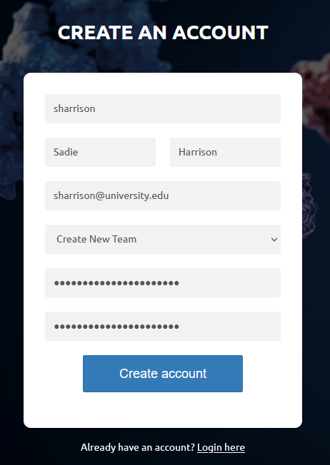

Information for Team Administrators¶
What is a Team Admin?¶
A Team Admin is a user from your organization who will manage administrative tasks for your team, such as locations, plate templates, and user security.
Registration¶
The registration process for a Team Admin is different from an ordinary user, because your team needs to be created in Quake before you and other users can log in. This needs to be done only once per team, by completing the following steps.
From the login screen, click on “Create new account”.
Fill in the registration form with your username, first name, last name, email, and password. Select “Create New Team” in the Team dropdown box.
You will not be able to log in yet, because your team needs to be created in the system first.
Contact us with your name, the email address and username associated with your account, and the name of your new team. Note that the team name created will be exactly as you specify in this request.
{kind=link}
Team Admin registration is not a self-service feature in Quake because most users do not have to create new team records, and we do not want end-users to accidentally create new team records if they are having trouble logging in.
First Steps¶
Once your registration request is completed, you will be able to log in to Quake. There are several steps that the Team Admin has to complete before the system is fully usable by end users. These are:
Create at least one location
Create at least one plate template
Activate and specify security points for new users
Read the following topics of documentation to learn about each of these steps.